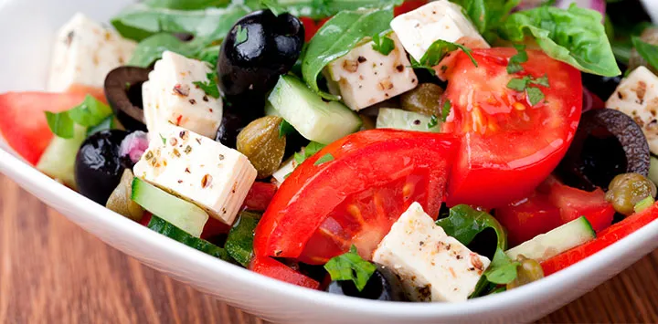

El sabor de la ensalada
Las mejores y más ricas ensaladas.

Ensalada Mixta
No falla en los menús del día de los bares de cualquier pais. Se prepara con lechuga, tomate y cebolla. Otras versiones más completas le añaden aceitunas, atún, huevo duro, queso y jamón. Se aliña con sal, vinagre y aceite de oliva.
Ensalada Capresse
Desde Capri nos llega esta delicia italiana que combina el sabor suave de la mozzarella de bufala con el tomate fresco y jugoso y el aroma de las hojas de albahaca.
Placeholder
9 mins
Ensalada Griega
País cuna de la dieta mediterránea, hace un homenaje a sus mejores ingredientes típicos. Lleva tomate, cebolla, pepino, pimiento, queso feta y aceitunas negras. Su secreto radica en la frescura de los ingredientes y en el tamaño del corte, que será en daditos y tiras medianas.
Ensalada de col o ‘coleslaw’
La reconocerás porque la suelen servir en los restaurantes americanos junto con las hamburguesas. Al llevar col cruda, su sabor tiene defensores y detractores a partes iguales. Además del ingrediente que le da nombre, se prepara con zanahoria, lombarda, piña o manzana.